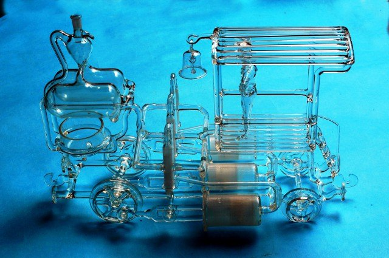
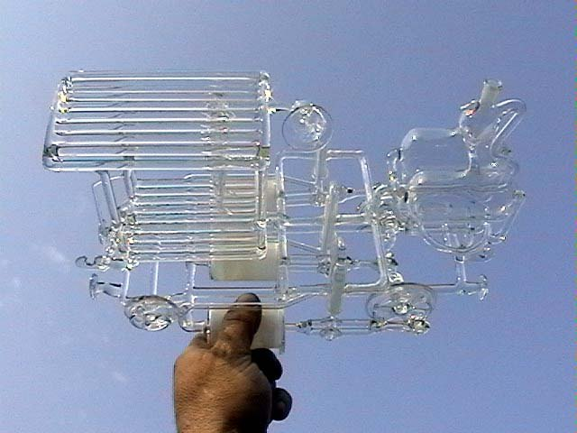
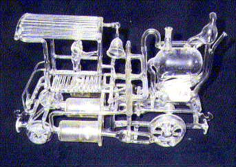

Tříválcová lokomotiva
Protože jednoválcový parní stroj ke své funkci potřebuje setrvačník k překonání „mrtvého“ chodu, tak při konstrukci skleněné lokomotivy jsem použil tří válců, jejichž pracovní úhly jsou posunuty po 120°.








A vzhledem k tomu, že napojení ojnic pístů a pohonu šoupat v jedné rovině by neúměrně prodloužilo délku hnané nápravy, zvolil jsem odvození pohybu šoupat zcela originálním způsobem. Mimochodem, tato konstrukce byla nejvíce obdivována na desítkách výstav parních strojů u nás i ve světě, protože na kovových modelech se s tímto řešením nikdo doposud nesetkal.
Ale opět se projevila závada. Tentokrát v tom, že kondenzující mokrá pára po několika okamžicích začne zvyšovat třecí odpor na vodítkách šoupat a lokomotiva se zastaví. Proto ji můžete vidět v běhu pouze na vzduch:
Funkční tříválcová lokomotiva ze skla otevřít na YouTube